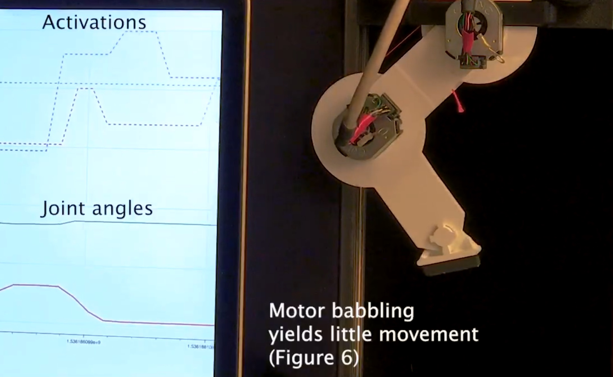

I'm a biologist with a penchant for product development—leveraging AI, statistical modeling, and hardware prototyping to solve issues in healthcare and biotechnology. Alongside my ongoing research, I pursue and accept industry projects. For executives and entrepreneurs who want to incorporate elements of digital health into their product strategy, I provide strategic consulting, project contracting, and IP licensing of my existing products.
Link: Unity For Humanity Talk Companion Site
Some recent projects include a tendon-driven robot that
teaches itself to walk
Nature Machine Intelligence, 2020
"Autonomous functional movements in a tendon-driven limb via limited experience"
Check out the supplemental videos!
, a signal processing algorithm that characterizes corticospinal neurophysiology from a muscle, a ML project that predicts future opioid abuse using insurance claim data, an auto-encoder that powers a tool for speech language pathologists, and a game AI that continually redesigns itself—so it's always as hard as it needs to be. With projects spanning across hospitals, universities, and biotechnology companies, I have the honor of collaborating with cutting edge researchers and clinicians in making digital health solutions more accessible.
I wear many hats:
If you're working on an interesting, challenging, and important project grab a time to chat.
Schedule a 20 min vid/audio chat or send me a note: briancohn@kaspect.com